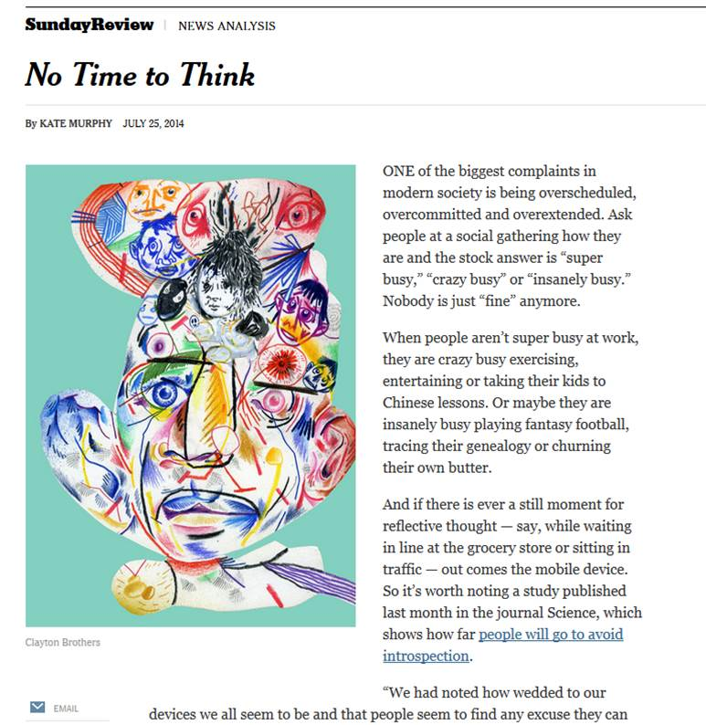

No Time To Think - NYT.com
Perma🔗 (via Next Draft)

Wow:
In 11 experiments involving more than 700 people, the majority of participants reported that they found it unpleasant to be alone in a room with their thoughts for just 6 to 15 minutes.
Moreover, in one experiment, 64 percent of men and 15 percent of women began self-administering electric shocks when left alone to think. These same people, by the way, had previously said they would pay money to avoid receiving the painful jolt
What a fascinating set of results. As a personal fan of journaling, and the forced introspection that provides, I find it baffling that people don't value (and take) the time to look inward. A couple more tidbits:
But you can’t solve or let go of problems if you don’t allow yourself time to think about them. It’s an imperative ignored by our culture, which values doing more than thinking and believes answers are in the palm of your hand rather than in your own head.
... Hard as they sometimes are, negative feelings are a part of everyone’s life, arguably more so if you are crazy busy. But it’s those same deep and troubling feelings, and how you deal with them, that make you the person you are. While busyness may stanch welling sadness, it may also limit your ability to be overcome with joy.
Have I mentioned how much I love Day One (iOS/OS X)? Because you should know I love it.